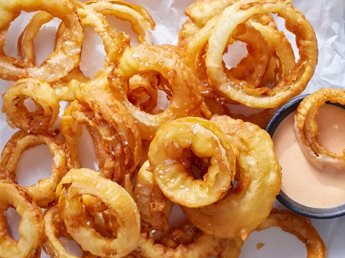

Onion Ring Batter

Description
This recipe is for an onion ring batter to fry delicious onion rings at home.
Make delicious onion rings, at home, today.
Ingredients
Dry ingredients
- 1 cup of flour
- 1 tsp baking flour
- 1 tbsp smoked paprika
- 1 tbsp garlic powder
- 1 tsp salt
Wet ingredients
- 1 1/2 cups of whole milk
- 1 egg
- 1 tbsp dijon mustard
Steps
- Add dry ingredients to a bowl and mix thoroughly.
- In a seperate bowl, mix wet ingredients thoroughly.
- Combine both, dry and wet ingredients and mix thoroughly.
Your batter is now complete and ready for use.